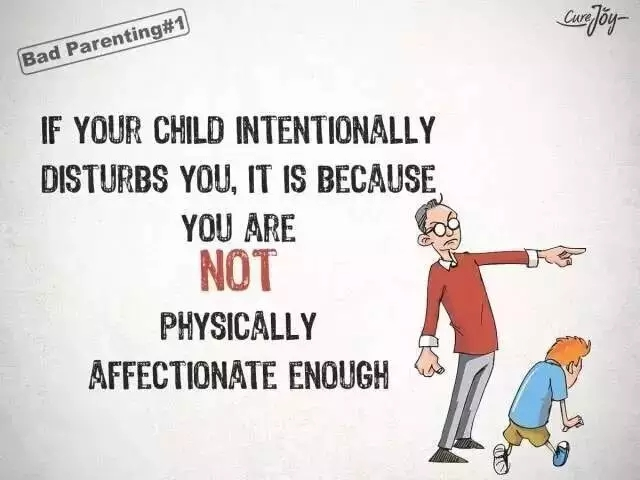
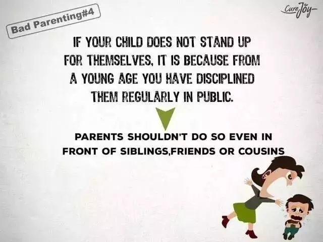
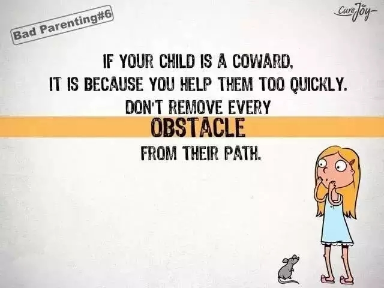
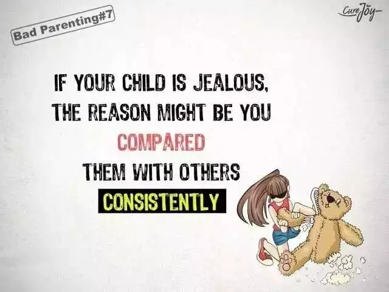
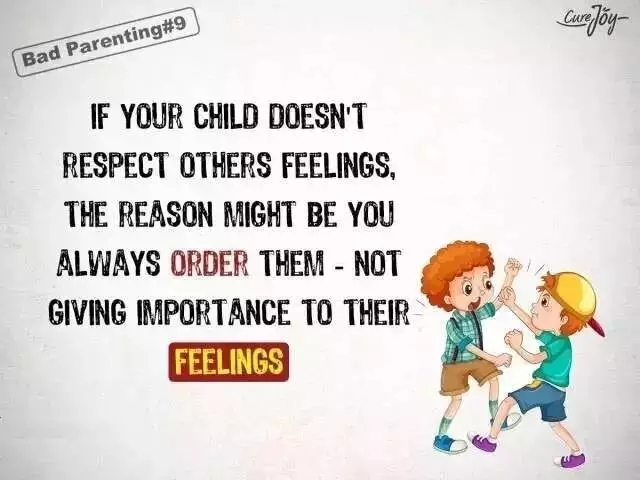

互惠动态
|
|
这些深深戳中了中国家庭的痛点
我们成为什么样的人，走什么样的路，大都取决于我们的童年。无疑，父母家庭在童年扮演者最重要的角色，对每一个人来说都既有幸福又有痛点。最近在网上有一组漫画被刷爆了！或许你也曾经历过。

如果你的孩子总是故意打扰你，其实是因为你和他缺乏肢体接触，缺乏亲密感。
如果你的孩子撒谎，其实这说明你曾经对他犯过的错误反应过度。
如果你的孩子缺乏自信心，其实是因为你给他们的建议多过了鼓励。

如果你的孩子不能坚持自我，其实是因为他们小时候你总是在公共场合教育批评他们。
如果你什么东西都给孩子买可他们还是会去拿不属于他们的东西，其实是因为你不让他们自己选择想要的东西。

如果你的孩子很懦弱，那其实是因为你帮助他们的速度太快了。不要帮你的孩子清扫他们成长道路上的每一个障碍。

如果你的孩子嫉妒心很重，那可能是因为你总是拿别的孩子和他们比较。
如果你的孩子很容易生气，那其实是因为你给了他们的赞扬不够，他们只有行为不当的时候才能得到注意。

如果你的孩子不会尊重别人的感受，那是因为你总是命令他们，不尊重他们的感受。
如果你的孩子总是神神秘秘的，什么都不告诉你，那是因为你总是爱打击他们。
如果你的孩子总是行为粗鲁没有礼貌，
那其实是从家长或者身边的人那里学来的。
在鼓励中长大的孩子，必定充满自信；
在接纳中长大的孩子，必定心胸宽广；
在分享中长大的孩子，必定慷慨大方；
在友善中长大的孩子，必能对世界多一份关怀。
你的孩子在哪种环境中长大，
决定了ta将来能成为什么样的人。
请一定记住：孩子的教育只有一次机会。
任何成功，都弥补不了教育孩子的失败！

关于互惠，您了解得够多么？
请外国学生来家庭照顾孩子，辅导孩子外语？
只了解这些是不够的！
获取更多信息请参考以下方式：
联系ASC：
电话：86-21-61116069(上海中心）
86-25-66065662（南京中心）
全国家庭均可申请！
手机：15601666586（可加微信）
Q Q：3259637585
微信：asc-center
邮箱：info@asc-center.com
网站：www.asc-aupair.com

感谢您对我们的关注